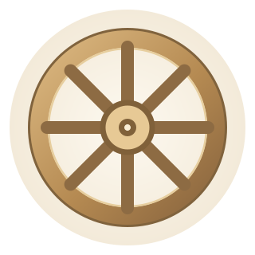

苦諦理解苦
看清生老病死、與所愛分離、求而不得等經驗中的苦。
佛法繪本 · 主題導讀
四聖諦是苦、集、滅、道。它們帶我們看清生命中難以滿足與安穩的經驗，理解苦如何生起、如何止息，以及通往止息的修行道路。
跟著小貓一頁一頁讀。想多看一眼，可以翻回上一頁，慢慢對照插圖、原字幕和經文。
 開始翻閱
開始翻閱
成道後，佛陀走到波羅奈的鹿野苑，去見五位曾和他一起修行的比丘。五人遠遠看見他，原本說好不去迎接。等佛陀走近，有人上前接過衣缽，有人為他備座，也有人端來洗腳的水。
佛陀告訴他們，沉溺享樂與自我折磨的苦行，是修行中要避開的兩個極端。他所體悟的中道，就是八正道。接著，他說明苦、集、滅、道，以及如何實踐四聖諦。說法時，憍陳如生起法眼，明白凡是因緣生起的，都會止息。這場說法，後來稱為「初轉法輪」。

經典對讀 · 《雜阿含經》第 379 經 · 《相應部》〈轉法輪經〉 · 《中部》第 26 經（重逢經過）
看清生老病死、與所愛分離、求而不得等經驗中的苦。
集諦指出，渴愛會使苦生起。例如，越執著於「事情一定要如願」，結果不如預期時，就越容易感到苦。
當渴愛止息、放下執取，苦也能止息。
修習八正道，從正見、正語到正念、正定，逐步走向苦的止息。
等一則重要訊息時，反覆看手機讓自己越來越焦躁。先察覺焦躁，再看見心裡「對方現在就得回覆」的期待。當這個期待鬆開，焦躁也可能減輕。這時可以練習正念，覺察想再看一次的衝動，再決定下一步。這個例子示範如何從日常辨認苦與苦因。
跟著繪本理解四聖諦，也可以把上面的四個問題帶進影片裡一起看。
繪本主體 · 全文
經中以「苦、苦習、苦盡、苦出要」表達四諦，對應本頁的「苦、集、滅、道」。
開啟 CBETA 原文 大正藏 T125，第 631 頁 a 欄第 7 行起
聞如是：一時，佛在舍衛國祇樹給孤獨園。爾時，世尊告諸比丘：「當修行四諦之法。云何為四？所謂初苦諦，義不可盡，義不可窮，說法無盡。第二者苦習諦，義不可盡，義不可窮，說法無盡。第三者苦盡諦，義不可盡，義不可窮，說法無盡。第四者苦出要諦，義不可盡，義不可窮，說法無盡。
「彼云何名為苦諦？所謂苦諦者，生苦、老苦、病苦、死苦、憂悲惱苦、怨憎會苦、恩愛別離苦、所欲不得苦，取要言之，五盛陰苦，是謂名為苦諦。
「彼云何名為苦習諦？所謂習諦者，愛與欲相應，心恒染著，是謂名為苦習諦。
「彼云何名為苦盡諦？所謂盡諦者，欲愛永盡無餘，不復更造，是謂名為苦盡諦。
「彼云何名為苦出要諦？所謂苦出要諦者，謂賢聖八品道，所謂正見、正治、正語、正行、正命、正方便、正念、正三昧，是謂名為苦出要諦。
「如是，比丘！有此四諦，實有不虛，世尊之所說，故名為諦。諸有眾生，二足、三足、四足，欲者、色者、無色者，有想、無想者，如來最上。然成此四諦，故名為四諦。是謂，比丘！有此四諦。然不覺知，長處生死，輪轉五道。我今以得此四諦，從此岸至彼岸，成就此義，斷生死根本，更不復受有，如實知之。」
爾時，世尊便說此偈：
「今有四諦法，如實而不知，
輪轉生死中，終不有解脫。
如今有四諦，以覺以曉了，
以斷生死根，更亦不受有。「若有四部之眾，不得此諦，不覺不知，便隨五道。是故，諸比丘！當作方便，成此四諦。如是，諸比丘！當作是學。」爾時，諸比丘聞佛所說，歡喜奉行。
從象跡譬喻理解四聖諦如何總攝善法。
開啟 SuttaCentral 漢譯全文 大正藏 T26，第 464 頁 b 欄第 17 行起
諸賢！若有無量善法，彼一切法皆四聖諦所攝，來入四聖諦中，謂四聖諦於一切法最為第一。所以者何？攝受一切眾善法故。諸賢！猶如諸畜之跡，象跡為第一。所以者何？彼象跡者最廣大故。
可對照四諦的實修重點：知苦、斷集、證滅、修道。
開啟 SuttaCentral 漢譯全文 大正藏 T99，第 103 頁 c 欄第 13 行起
復次，苦聖諦知當復知，本所未聞法，當正思惟。時，生眼、智、明、覺。苦集聖諦已知當斷，本所未曾聞法，當正思惟。時，生眼、智、明、覺。
復次，苦集滅，此苦滅聖諦已知當作證，本所未聞法，當正思惟。時，生眼、智、明、覺。復次，此苦滅道跡聖諦已知當修，本所未曾聞法，當正思惟。時，生眼、智、明、覺。
依苦、集、滅、道對照巴利原文與莊春江中譯節錄。莊譯經名為〈法輪轉起經〉。
巴利原文
Idaṁ kho pana, bhikkhave, dukkhaṁ ariyasaccaṁ— jātipi dukkhā, jarāpi dukkhā, byādhipi dukkho, maraṇampi dukkhaṁ, appiyehi sampayogo dukkho, piyehi vippayogo dukkho, yampicchaṁ na labhati tampi dukkhaṁ—saṅkhittena pañcupādānakkhandhā dukkhā.
莊春江譯 · 節錄
「五取蘊是苦」
巴利原文
Idaṁ kho pana, bhikkhave, dukkhasamudayaṁ ariyasaccaṁ— yāyaṁ taṇhā ponobbhavikā nandirāgasahagatā tatratatrābhinandinī, seyyathidaṁ— kāmataṇhā, bhavataṇhā, vibhavataṇhā.
莊春江譯 · 節錄
「欲的渴愛、有的渴愛、無有的渴愛」
巴利原文
Idaṁ kho pana, bhikkhave, dukkhanirodhaṁ ariyasaccaṁ— yo tassāyeva taṇhāya asesavirāganirodho cāgo paṭinissaggo mutti anālayo.
莊春江譯 · 節錄
「無餘褪去與滅」
巴利原文
Idaṁ kho pana, bhikkhave, dukkhanirodhagāminī paṭipadā ariyasaccaṁ— ayameva ariyo aṭṭhaṅgiko maggo, seyyathidaṁ— sammādiṭṭhi …pe… sammāsamādhi.
莊春江譯 · 節錄
「就是這八支聖道」
分鏡引用
開啟 CBETA 原文 大正藏 T251
觀自在菩薩。行深般若波羅蜜多時。照見五蘊皆空。度一切苦厄。
舍利子。色不異空。空不異色。色即是空。空即是色。受想行識。亦復如是。
舍利子。是諸法空相。不生不滅。不垢不淨。不增不減。是故空中無色。無受想行識。無眼耳鼻舌身意。無色聲香味觸法。無眼界。乃至無意識界。無無明。亦無無明盡。乃至無老死。亦無老死盡。
無苦集滅道。無智亦無得。以無所得故。
菩提薩埵。依般若波羅蜜多故。心無罣礙。無罣礙故。無有恐怖。遠離顛倒夢想。究竟涅槃。
三世諸佛。依般若波羅蜜多故。得阿耨多羅三藐三菩提。
故知般若波羅蜜多。是大神咒。是大明咒。是無上咒。是無等等咒。能除一切苦。真實不虛。故說般若波羅蜜多咒。即說咒曰。
揭諦揭諦。波羅揭諦。波羅僧揭諦。菩提薩婆訶。